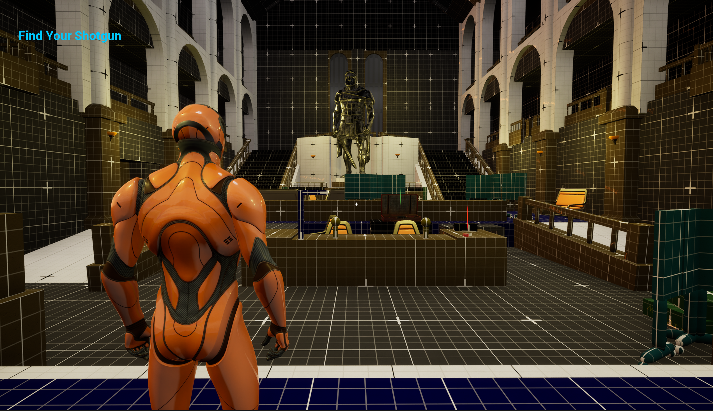
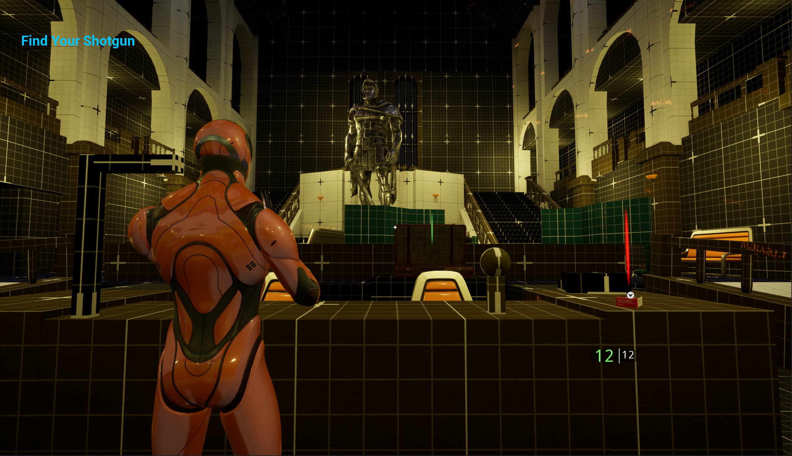
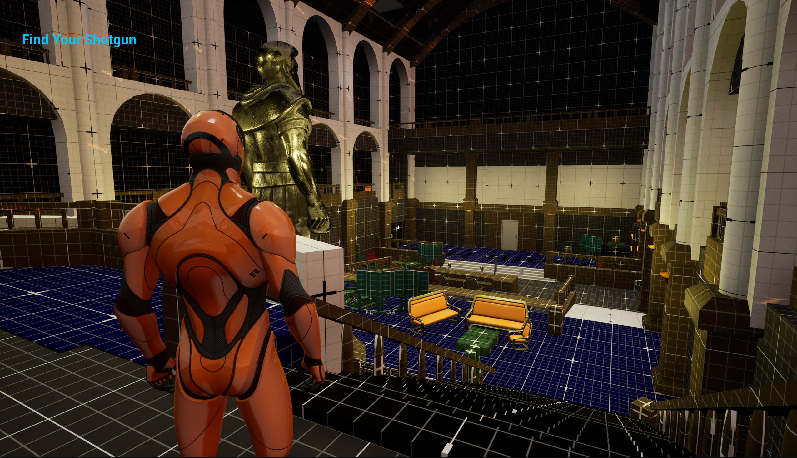
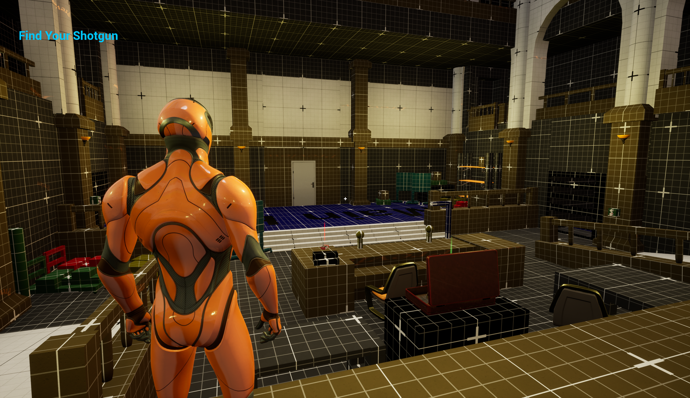
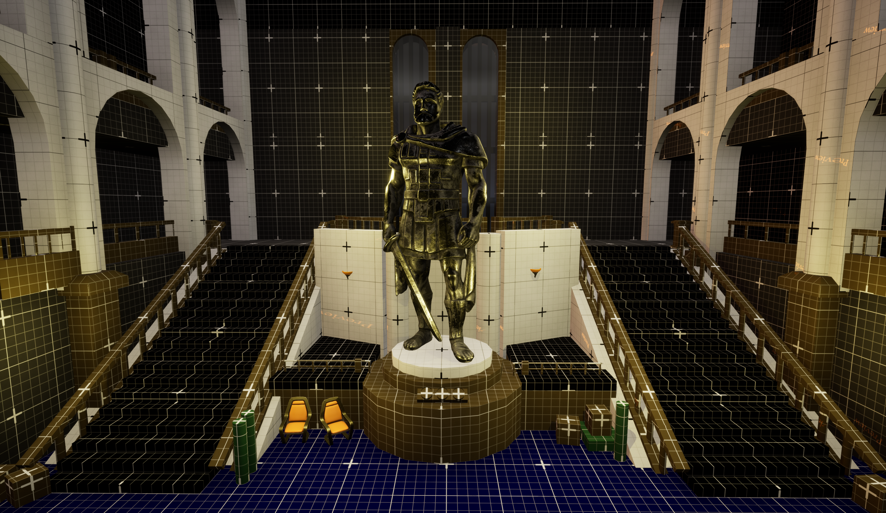
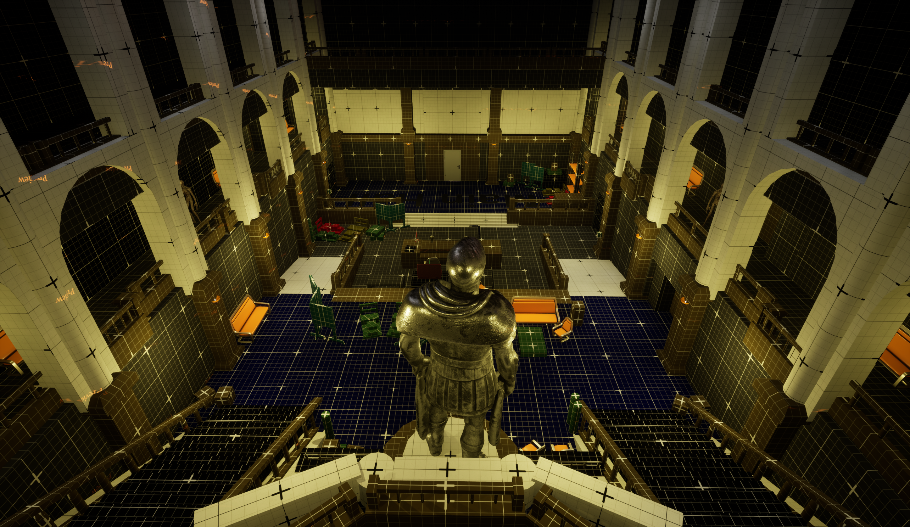

Full Playthrough
Project Overview
Overview
This is a recreation of the iconic Raccoon City Police Department Main Hall from Resident Evil 2 Remake, built entirely in Unreal Engine 5. The goal was not just to recreate the space visually — But to use it as a platform to push my technical skills in modeling, materials, blueprints, and gameplay systems.
Goals
- Recreate the RPD Main Hall faithfully from reference images, footage, and interactive web tools
- Improve my proficiency with Unreal Engine's modeling tools and geometry scripting
- Demonstrate technical depth through custom blueprints, materials, enemy AI, and mission logic

Final build — RPD Main Hall recreation

Final build — RPD Main Hall recreation
Research & Reference
- Gathered reference images — Collected high-resolution screenshots, promotional art, and fan-captured photos of the RPD Main Hall to understand the spatial layout, color palette, and prop placement
- Watched gameplay footage — Studied multiple playthroughs of RE2 Remake to understand how the player moves through the space and how lighting, atmosphere, and sound design inform the environment
- Used interactive web tools — Found a browser-based tool that lets you navigate the actual RE2 game environment in real time, allowing me to freely explore angles, scale, and details that screenshots couldn't capture
Having the ability to freely explore the reference space interactively was a game changer. It let me study scale and proportions in a way that no static image could replicate — Which directly informed how I approached blocking out the hall.
Reference images, video link, and 360 Cities link — Use left click to pan and zoom
Environment & Modeling
A major focus of this project was pushing my skills with Unreal Engine 5's modeling tools. Rather than relying entirely on marketplace assets, I modeled key pieces of the environment by hand — Starting with the metrics gym, which gave me a controlled space to develop and validate my workflow before applying it to the main hall. I paid close attention to proper real-world scaling throughout, which is something I wanted to improve from previous projects.
Metrics Gym — Built to validate scale and modeling workflow
- Real-world scaling — Every object modeled to accurate dimensions to ensure spatial believability
- Modeling tools proficiency — Used UE5's built-in modeling toolkit for geometry creation and editing entirely within the engine
- Material functions — Built two custom material functions to handle surface detail across multiple meshes efficiently
Blueprint Systems — Material Functions
These two material functions were arguably the most important technical contribution of this project. Working with them forced me to think differently about how surfaces read in a space — About scaling, visual cohesion, and why a well-lit, properly textured environment communicates so much more than a gray cubegrid blockout ever could. This section changed how I approach environment building at a fundamental level.
Removes visible tiling seams on large surfaces by aligning texture projection to object space
Used for blockout validation — Clean grid surface to verify scale and proportion before final texturing
Both functions are reusable across any mesh in the scene. Together they showed me the importance of readable spaces, proper scaling, and overall visual cohesion — A massive step beyond leaving everything gray in cubegrid.
Blueprint Systems — Architecture
The RPD Main Hall features distinctive arched windows and archways that repeat throughout the space. Creating these arch shapes purely out of primitives is practically impossible — So I had to get creative and build a blueprint that could procedurally generate the arch geometry. Once I had that working for the archways, I realized I could apply the same approach to the windows too, so I built a second generator for those as well.
Procedural window generator
Procedural archway generator
Building procedural generators instead of placing static meshes meant I could iterate on the look of windows and archways globally — Changing one parameter updates every instance in the scene. This saved significant time and kept the architecture consistent throughout the build.
Blueprint Systems — Enemy AI
To make this a playable experience rather than a static environment, I built a fully functional enemy AI system. The enemy patrols the hall on a set path using a NavMesh, detects the player, transitions into a chase, and attacks when in range. Each behavior state is handled by a separate blueprint, keeping the logic clean and modular.
Damage logic — Enemy responds to player hits and dies when health depletes
Patrol, chase, and attack blueprint — Enemy uses NavMesh to pursue and damage the player on detection
Blueprint Systems — Mission Logic
The playable experience has a clear mission structure: find your two weapons and use a key to escape the building. Each pickup triggers UI changes and world events — Making the space feel reactive and purposeful rather than just decorative.
- Shotgun pickup — The first objective. When collected, the UI updates to "Find your Rifle"
- Rifle pickup — The second objective. When collected, a previously locked door at the start of the level opens — Revealing a jailed enemy the player passed by earlier. The objective updates to "Escape The Police Department"
- Key pickup — The final objective. Used to unlock the exit and complete the mission
Shotgun pickup — Triggers UI update to "Find your Rifle"
Rifle pickup — Unlocks the jailed enemy's door and updates objective to "Escape The Police Department"
Door open blueprint — Triggered when rifle is picked up, revealing the jailed enemy
Tying the door unlock to the rifle pickup was a deliberate design choice borrowed from RE2 itself — The player runs past something ominous early on, and a later action makes it relevant. It rewards attentive players and gives the space a sense of cause and effect that makes it feel like a real level rather than a showcase.
Final Design Gallery




Conclusion & Learnings
Recreating the RPD Main Hall pushed me further technically than any previous project. Moving beyond layout and encounter design into procedural generation, custom materials, AI systems, and mission logic gave me a much broader picture of what goes into shipping a real game space.
Knowledge Gained
- Custom material function creation — Building reusable functions for object-aligned textures and grid materials across multiple meshes
- Unreal Engine 5 modeling tools — This was my first project where I leaned heavily into UE5's built-in modeling toolkit, improving my proficiency and scaling discipline significantly
- Blueprint generators — Building procedural window and archway generators taught me how to think systematically about repeating architectural elements
Areas for Growth
- Blueprints and scripted events — There is still a lot more complexity I can push into my blueprint systems, particularly around scripted world events
- Getting familiar with Unreal's Sequencer — Cinematic and scripted sequences would elevate the experience significantly
- Making a longer, more intricate experience — The space and systems are in place, the next step is expanding the mission and adding more environmental depth